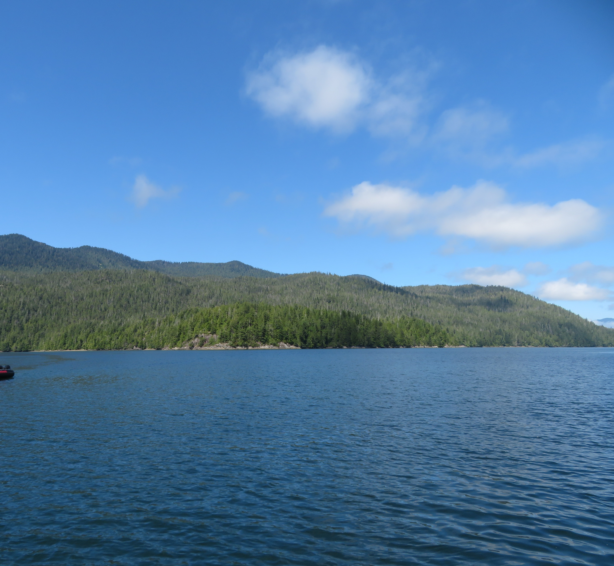
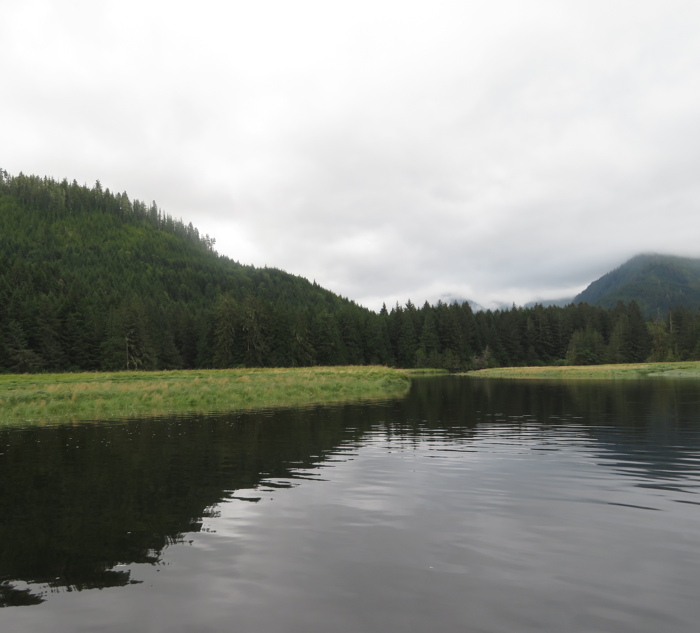
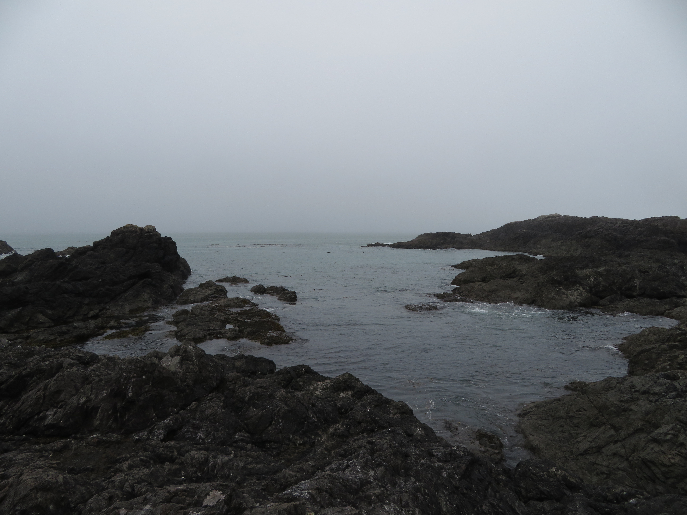
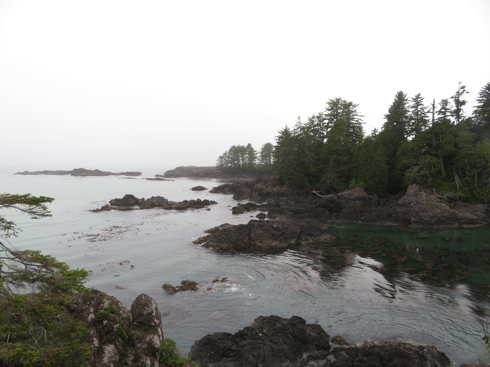
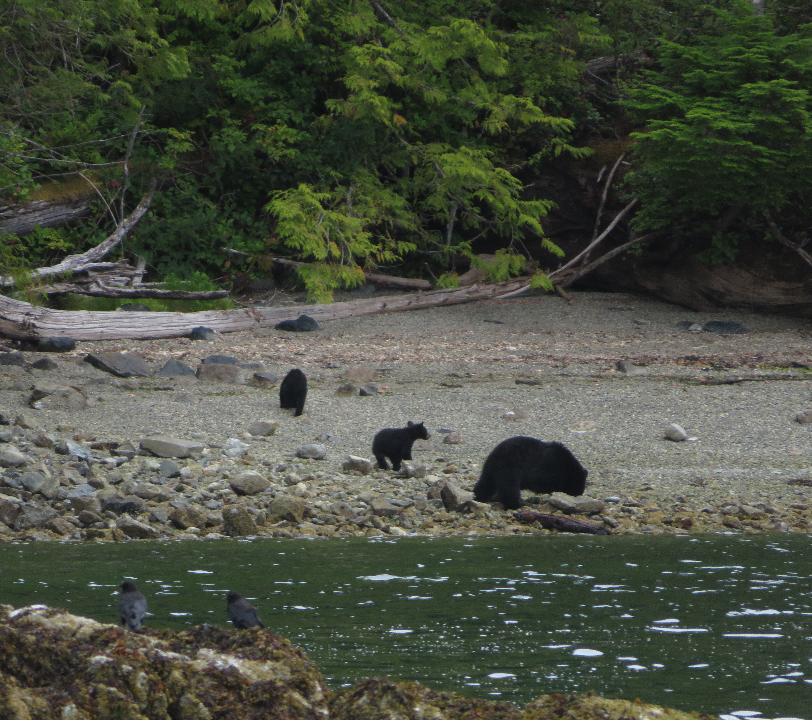
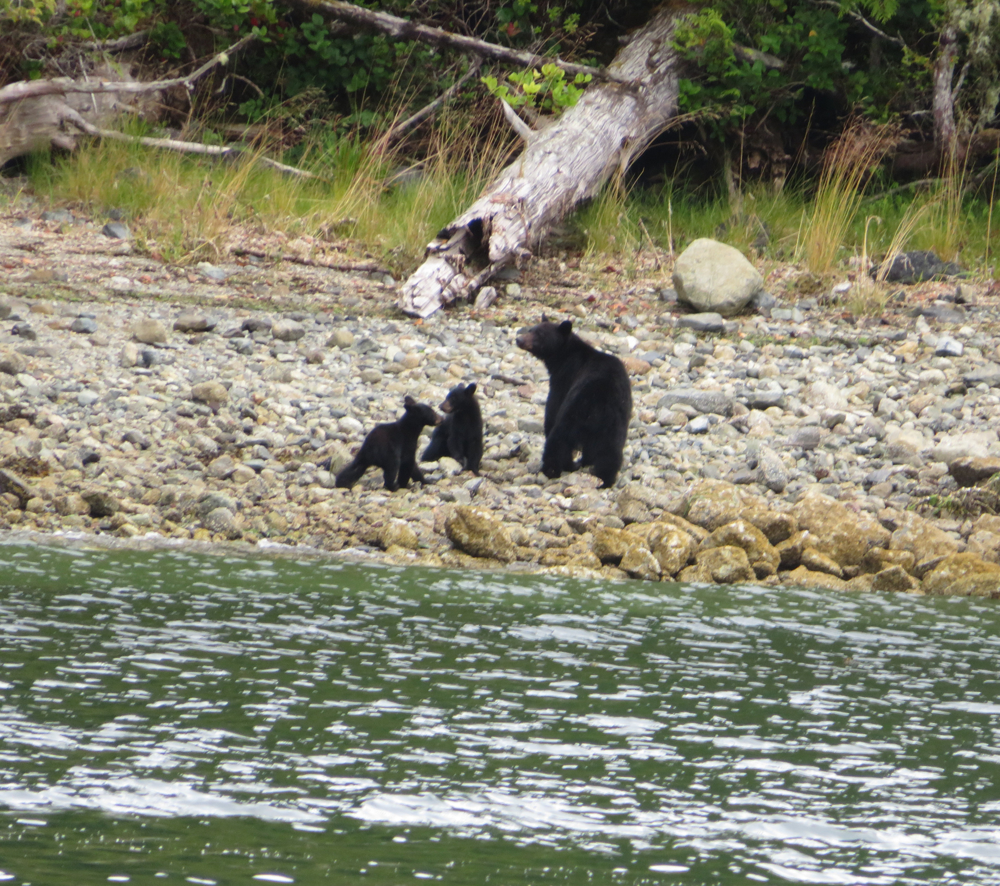
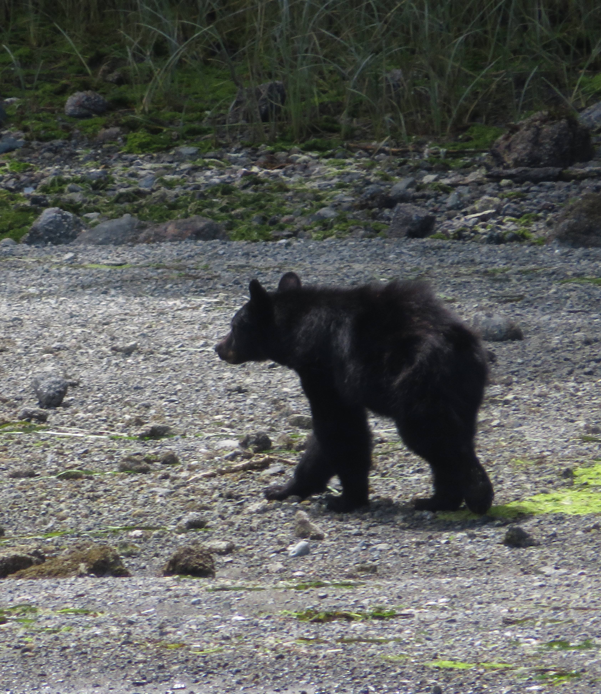
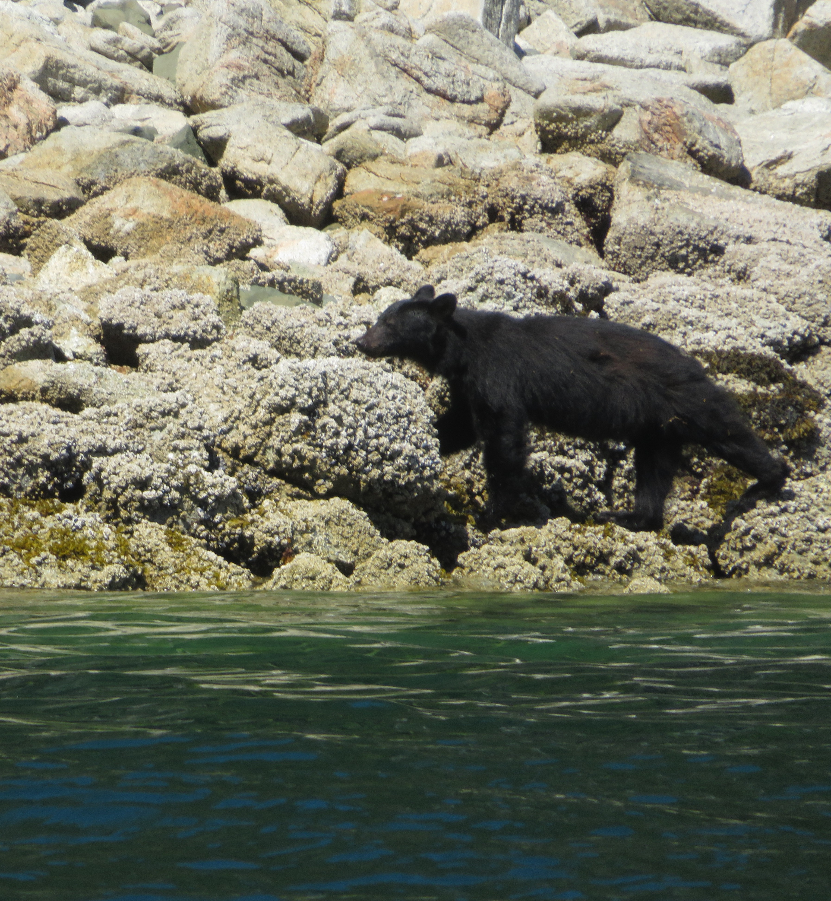

Tofino

Glendale Cove

Black Bear
Vancouver Island is simply paradise, an adventure-packed destination full of amazing seaside views as well as a haven for wildlife. Accessible through a 2hr ferry ride from Vancouver, the island is my favorite place I visited in Canada.
Tofino
Glendale Cove
Black Bear
Vancouver Island's coastal scenery is gorgeous, with both the western part of the island near Tofino and Eastern part near the fjord of Knight Inlet being incredibly scenic, highlighted by the mountains of the nearby islands rising above the water. My favorite hike on the island was the Wild Pacific Trail in Ucluelet, a relaxing walk along the island's rocky shoreline. The beaches of Tofino are also a great place to enjoy the surrounding island scenery.

Tofino Bay

Knight Inlet

Johnstone Strait

Wild Pacific Trail

Wild Pacific Trail

Tofino Beach
The wildlife viewing opportunities of the island are top-notch, with Bears being my favorite. In Tofino, bears can be viewed from a scenic boat tour taking you across the stunning islands, with my best bear sighting by far being that of a mother black bear and her 2 adorable cubs hanging out and flipping rocks on the rocky beaches in search for food. Just as cool though were the other singular black bears I got to see on the shores of Tofino, also searching for food, which were truly beautiful to view up close.

Black Bear & 2 Cubs

Black Bear & 2 Cubs

Black Bear & 2 Cubs
.JPG)
Black Bear, Sandy Beach

Black Bear, Rocky Shore

Black Bear, Rocky Shore

Black Bear, Rocky Shore

Black Bear, Sandy Beach
I also got to see plenty of bears in the islands and shores around Knight Inlet off the coast of northeastern Vancouver Island. On the boat tour here, I first got to briefly see a Grizzly Bear and her cub in the distance before witnessing several beautiful black bears in separate spots hanging out on the rocky coastline and the many islands in the Inlet.

Grizzly Bear + Cub

Island Black Bear

Island Black Bear

Island Black Bear

Island Black Bear

Island Black Bear
While bears were the highlight, Vancouver Island is also home to tons of other amazing creatures. In Tofino, I got to see this large colony of Harbour Seals on a small island as well as an adorable Sea otter outside Tofino's marina. Along with bears, I also got to watch a mother deer and her two fawns hang out in the wetlands of Knight Inlet as well as tons of birds in the vicinity.

Harbor Seals, Tofino

Harbor Seals, Tofino

Deer and Fawns, Knight Inlet

Sea Otter, Tofino Harbor

Sea Otter, Tofino Harbor

Deer and Fawns, Knight Inlet
Besides the bears, what made Vancouver Island so cool for me was whale watching. Besides getting to see a Humpback whale on the ferry to the island, I got to witness a huge pod of Orcas in the inlets of Tofino, hunting the seals mentioned above. It was like a National Geographic scene to me, and watching the Orcas close in on the seals and the seals rushing off the small island for survival was awesome.

Orca

Orca

Orca